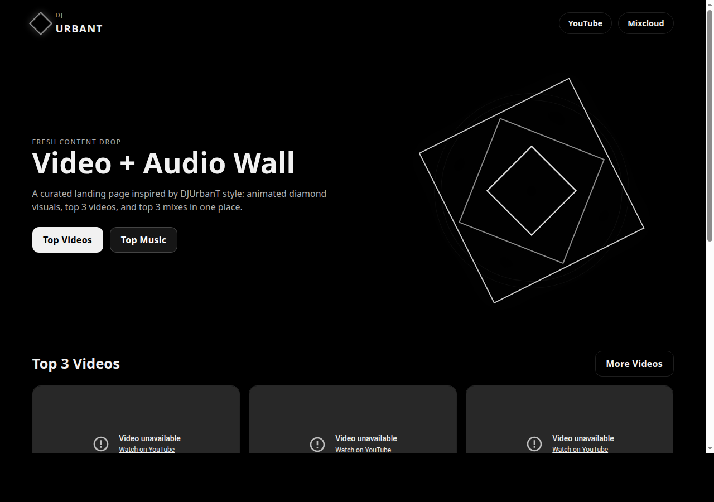
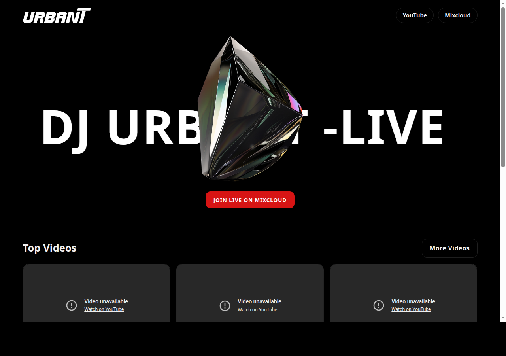
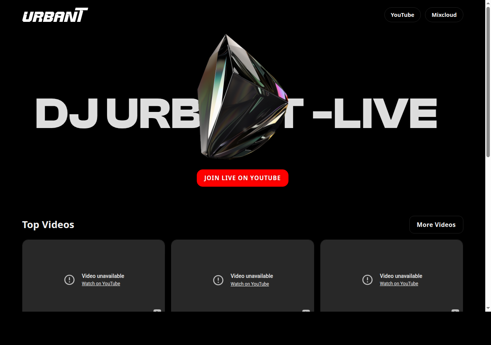
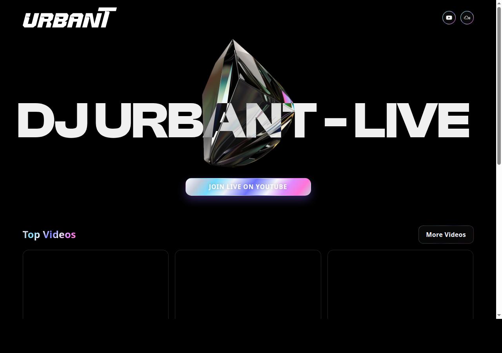
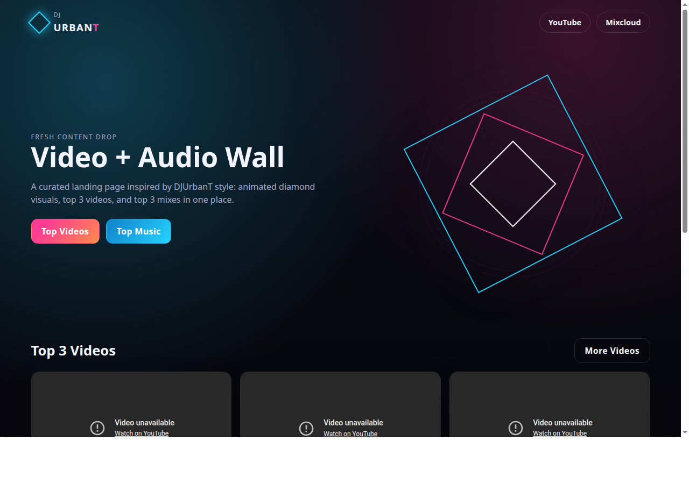
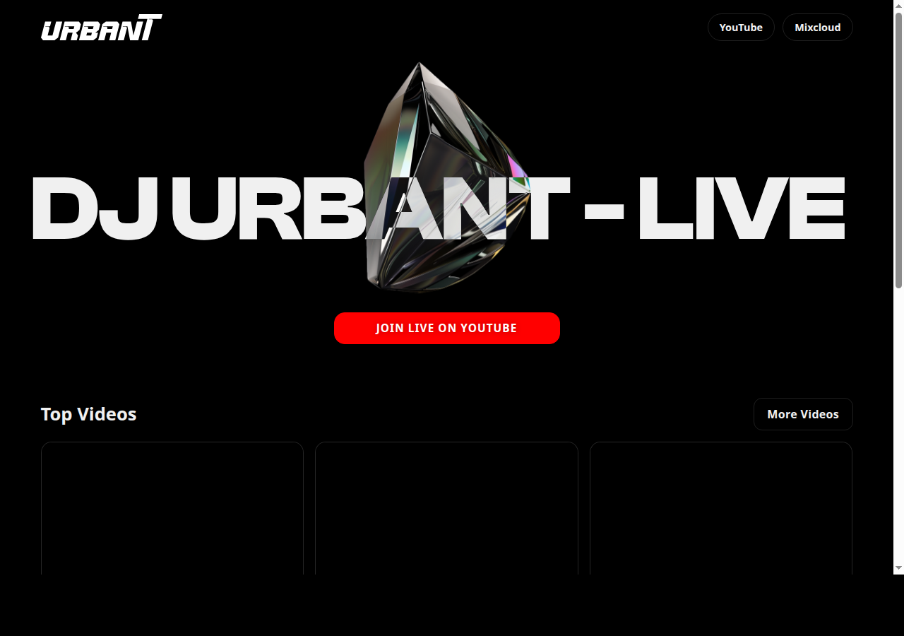

snapshot-initial-landing
Create DJ UrbanT media landing page with video and audio wall

Chronological screenshots of your tagged snapshots. Open this page locally to compare versions quickly.
Create DJ UrbanT media landing page with video and audio wall
Switch landing page theme to monochrome black

Tune hero overlay and add local assets with media subpages

Rank media walls from fetched YouTube and Mixcloud stats

Pin most recent media first with +150 counter boost
Use icon header links and metallic accent with cleaner media tiles
Merge branch 'cursor/media-content-landing-page-e157'

Revert "Merge branch 'cursor/media-content-landing-page-e157'"

Restore live site state to commit 1ef976b
